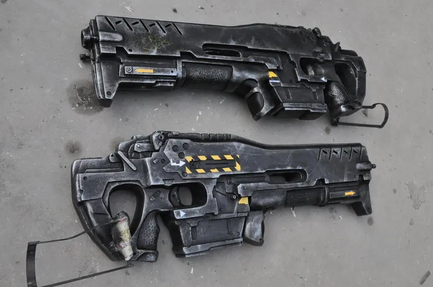
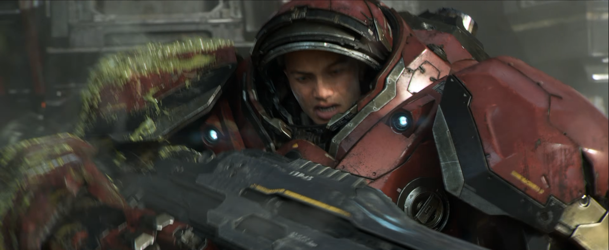
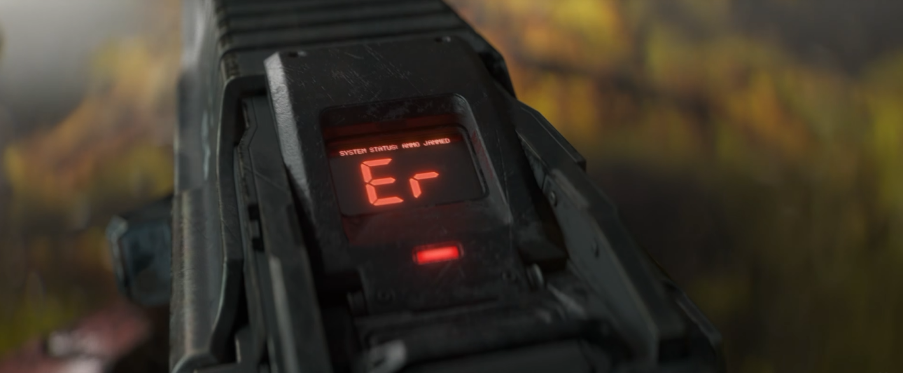
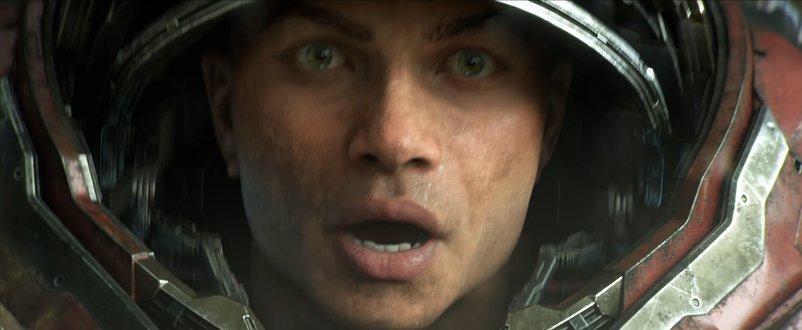

C-14 임페일러(Impaler) 가우스 소총
스타크래프트2 시점 해병(마린) 의 주무장.
인게임에선 광물 50에 튀어나와 공격력6 짜리 공격을 뿌리는 소탈한(?) 무기.
그래서 이 총의 실제 설정상 스펙은 도대체 어느정도일까?
아래로는 이 총의 공식 설정 이다.
- 구경: 8mm 극초음속 철갑 금속 "스파이크". 탄체는 강철로 피복되어 있으며 강철판 2인치(약 5cm) 관통 설계
- 발사 속도: 완전 자동 초당 30발(1,800 RPM).
- 탄창: 스타2 시점의 1형 변형 기준 탄창당 최소 500발. 더 넓은 용량의 드럼 탄창 혼용 가능.
이게 도대체 얼마나 강력한걸까? AI한테 한번 물어봐보자
| 화기 | 총구속도 | 탄당 에너지 |
|---|---|---|
| M4 (5.56mm) | ~900 m/s | ~1.8 kJ |
| AK-47 (7.62×39) | ~715 m/s | ~2 kJ |
| .50 BMG (M2 중기관총) | ~900 m/s | ~15~18 kJ |
| C-14 (가우스 소총) | ≥1,700 m/s | ~20~25 kJ |
정리하자면 C-14는 "개인화기 크기에 25mm 기관포 관통력 + 미니건급 연사속도"를 합친 물건이다.
굳이 비슷한 걸 찾으면 차량 탑재 20~25mm 기관포를 사람이 들고 뛰는 셈이다.
다만 이 괴물같은 총의 반동을 사람이 견딜 수 있을리가 만무하니 해병들은 CMS 전투복을 착용한다.
이정도 스펙이면 21세기 현실 지구에선 그냥 눈 앞에 있는 모든 걸 지워버리는 수준의 화력이라 할 수 있다.
우리 자치령의 자랑스러운 최정예 해병 요원들이 얼마나 중요한 인재들인지 무기만 봐도 알 수 있는 대목이다.



??? : 최정예라메 씨발!!!
텅스텐이나 티타늄급 처줘야지
시즈모드 박고 쏘는거도 주춤 하고는 그냥 돌진해오잖음